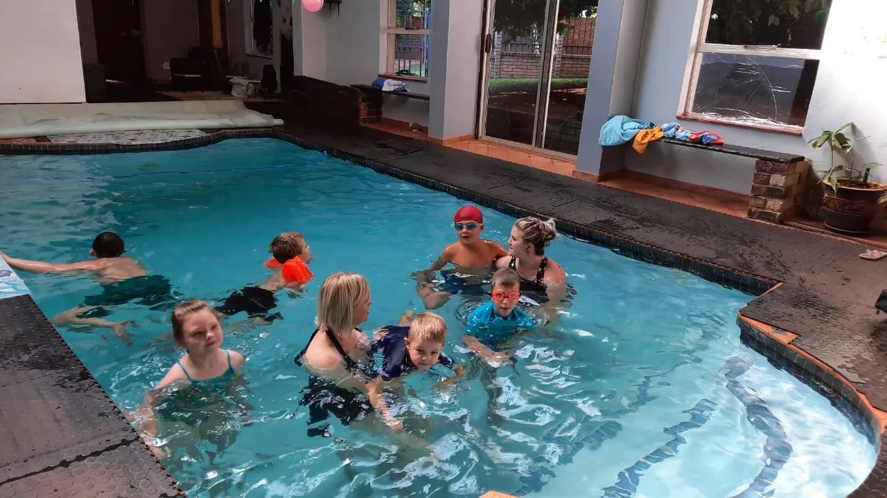
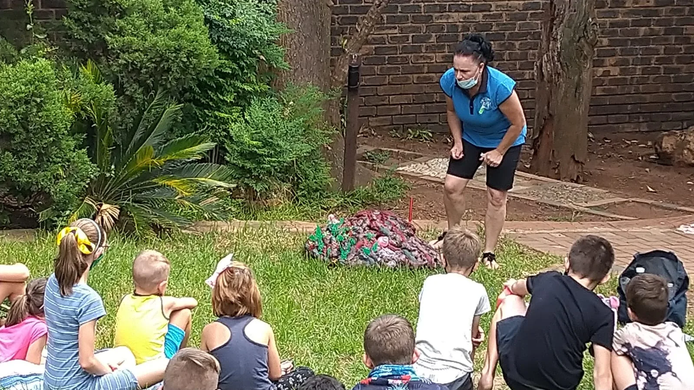
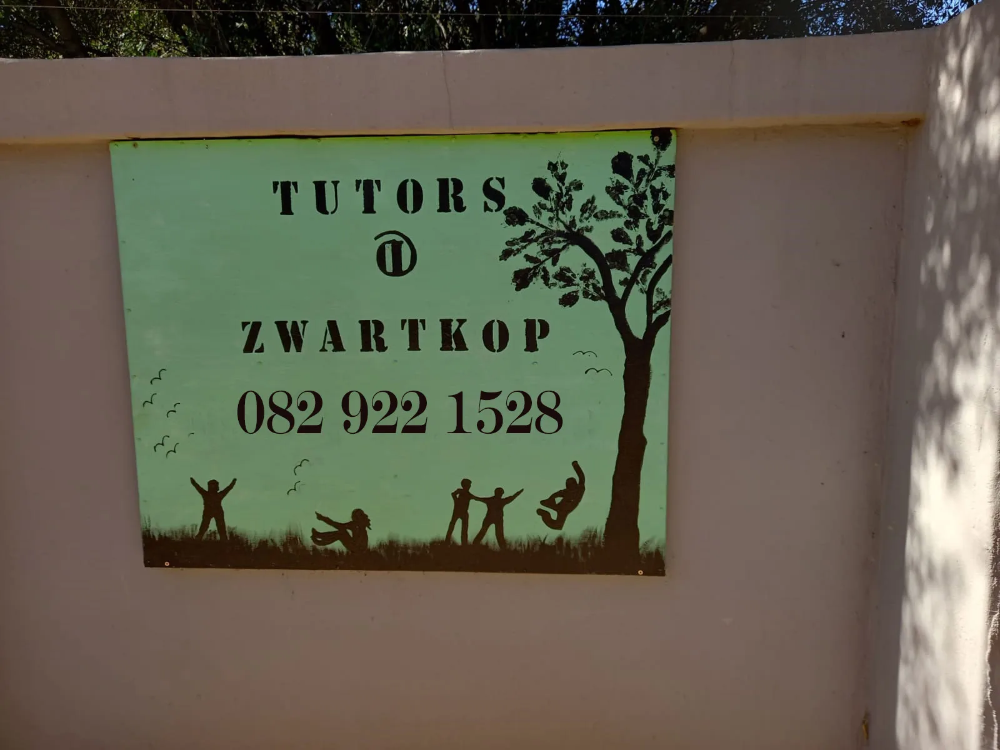
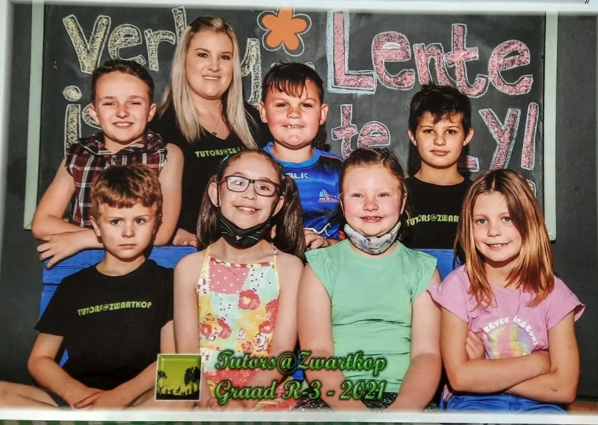

Tutors@Zwartkop
Verwelkom U
Afrikaanse tuisonderrig leersentrum vir Graad RR tot Graad 12 waar Christelike beginsels, normes en waardes die grondslag vorm van elke leerder se reis.
Christelike Waardes
Christelike beginsels, normes en waardes as grondslag
Klein Klasse
Individuele aandag en selfstandige leer aangemoedig
Graad RR – 12
Holistiese onderrig vir alle leerders
Nasorg Beskikbaar
Maandag tot Vrydag, 13:00 tot 17:30
Belangrike Inligting
Ons leeromgewing is gestruktureer, fokusgerig en geskik vir groei.
Die Wonderwêreld
van Leer
Om te leer is soos om op 'n ontdekkingsreis te gaan. Om elke hoek en draai wag daar 'n nuwe avontuur en uitdaging wat bemeester moet word. 'n Nuwe wêreld word oopgesluit en so gaan elke leerder saam met ons op sy eie ontdekkingsreis.
Tutors@Zwartkop maak die ontdekkingsreis saam met u kind mee. Ons gee nie net intellektuele bystand nie, maar poog ook om kinders se emosionele intelligensie te ontwikkel.
"Ek is tot alles in staat deur God wat my die krag gee"
— Filippense 4:13Sentrum Tye
Maandag – Donderdag
07:30 – 13:00
Leerders ontvang vanaf 06:45
Vrydag
08:00 – 12:00
Verkorte dag
Nasorg
13:00 – 17:30
Ma–Vr · Oop gedurende vakansies (uitg. Des.)
Akademiese Uitnemendheid
Ons bied erkende kurrikulums aan wat leerders voorberei vir sukses. Graad RR–4 volg die Oxford Afrikaanse Sillabus; Graad 5–12 volg die IMPAQ-kurrikulum.
Oxford Afrikaanse Sillabus
Ons Graad R tot Graad 4 leerders volg Oxford se Afrikaanse Sillabus. Leerders word deurlopend geassesseer en terugvoering word gereeld aan ouers gegee. Probleemareas word vinnig geïdentifiseer en aangespreek.
Ons volg die IMPAQ-kurrikulum
Die Graad 5 tot Graad 12 leerders volg die erkende IMPAQ-kurrikulum — landwyd bekend vir uitmuntende standaarde. Kyk gerus op impaq.co.za vir meer inligting.
Meer as Net Akademie
Ons glo dat holistiese ontwikkeling liggaam, gees en siel insluit.

Warm Water Swembad
Ons perseel het 'n pragtige warm water swembad. Swem bou kernsterkte, ontwikkel spiere en bevorder neurologiese en ruimtelike ontwikkeling.
Lees meer →
RSD Rugby
RSD Rugby bied oefen sessies by die leersentrum aan. Leerders ontwikkel groot motoriese spiere, hand-oog koördinasie en ruimtelike oriëntasie.
Lees meer →
Die Witjassies
'n Interaktiewe wetenskapprogram waar kinders op 'n speelse, praktiese wyse meer van wetenskap leer.
Lees meer →Ons Filosofie
"Ek is tot alles in staat deur God wat my die krag gee"
Filippense 4:13"Geloof, hoop en liefde. En die grootste hiervan is die liefde"
1 Korintiërs 13:13"Die beginsel van die wysheid is die vrees van die Here, en kennis van die Heilige is verstand"
Spreuke 9:10Lewe by Tutors@Zwartkop
Kyk gerus na ons fotos en ontdek wat ons sentrum te bied het.



